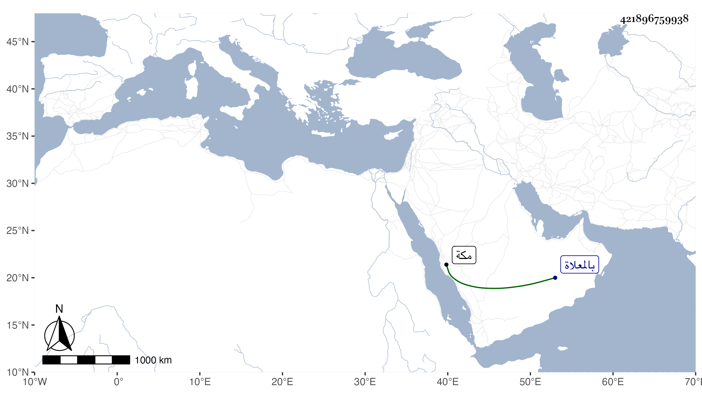

0902Sakhawi.DawLamic.ITO20230111-ara1.EIS1600.421896759938
Biography ID: 421896759938
708
قندولة ابنة أبي الخير محمد بن ريحان المريسى زوج الجمال محمد بن الشهاب أحمد البونى أحد أعيان الدولة بمكة . ماتت في يوم السبت ثاني عشر جمادى الثانية سنة ثلاث وتسعين وصلى عليها بعد صلاة العصر عند باب الكعبة ودفنت من يومها بالمعلاة عند والدها بتربة سفين بن عينية .
